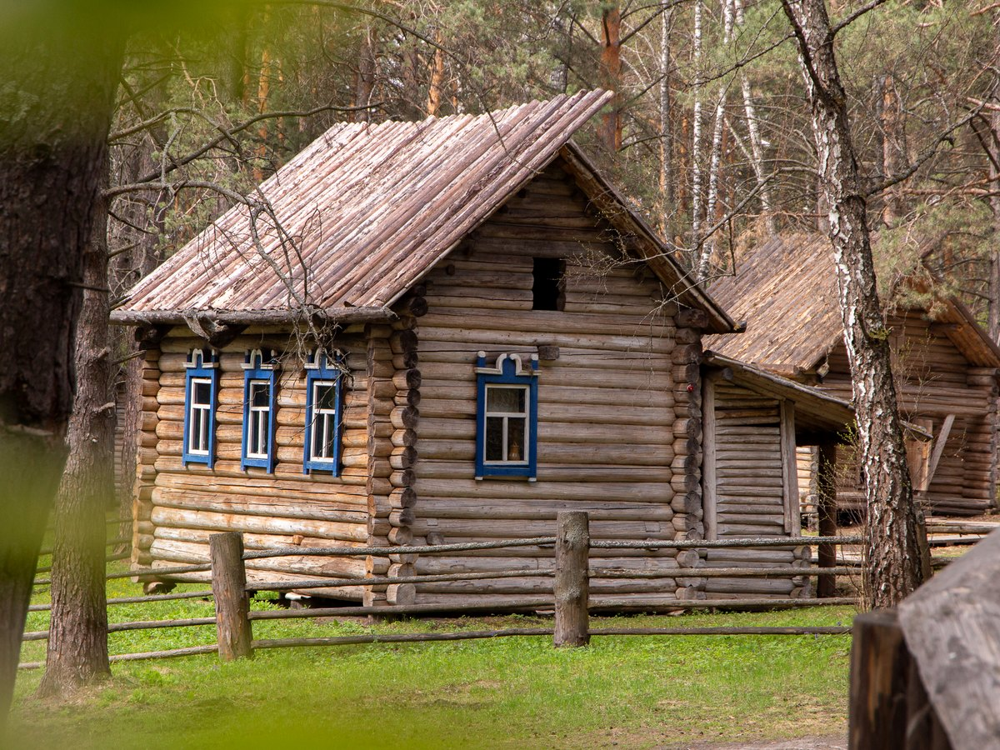
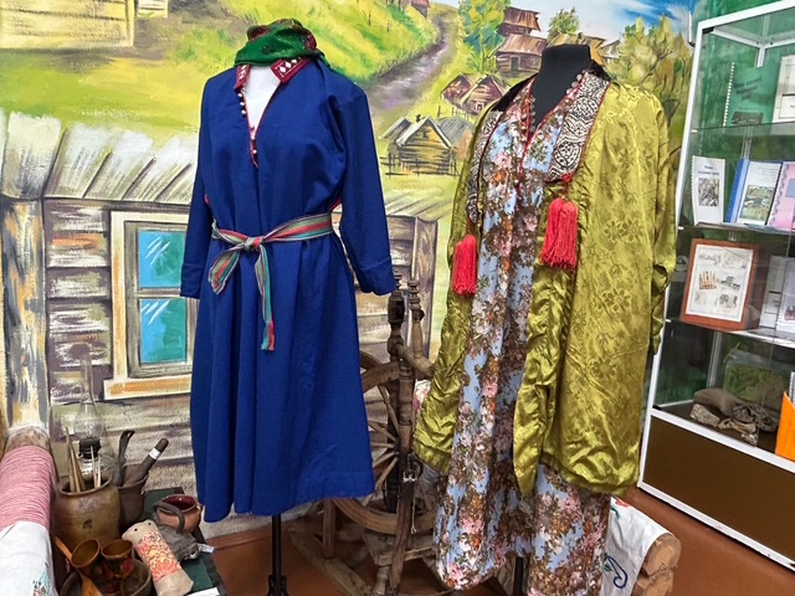
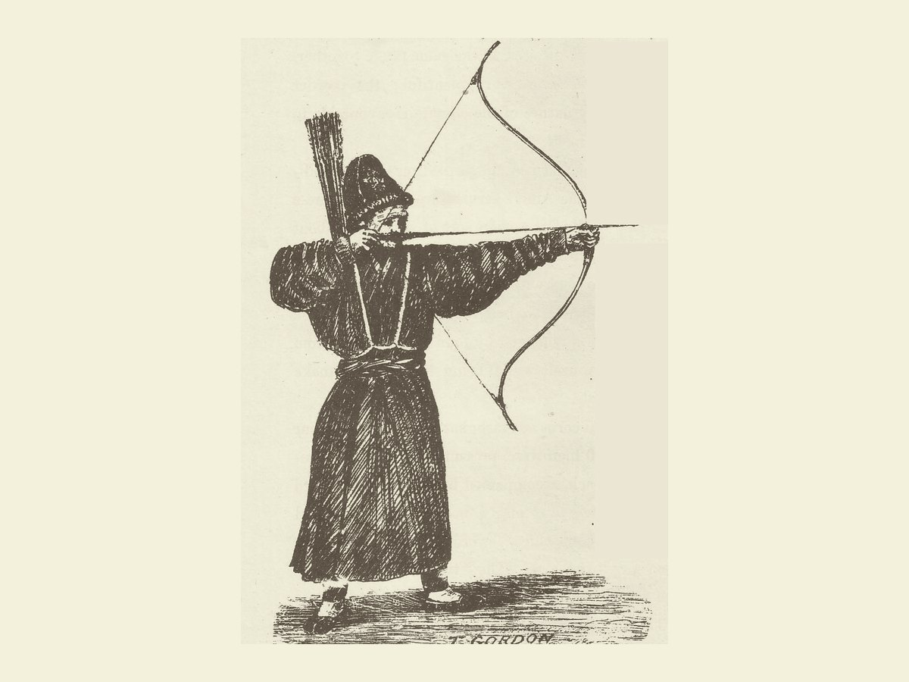
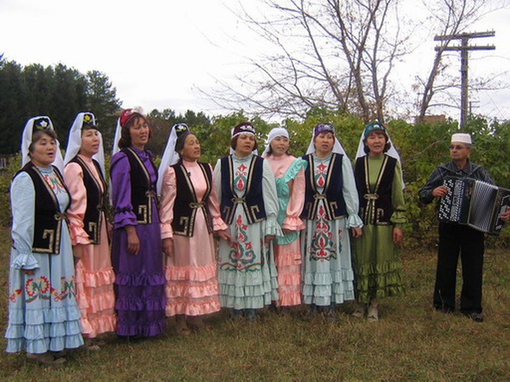
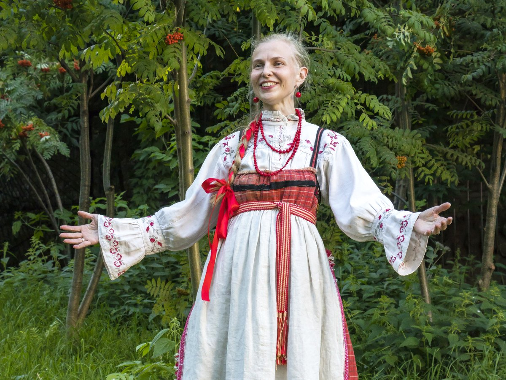
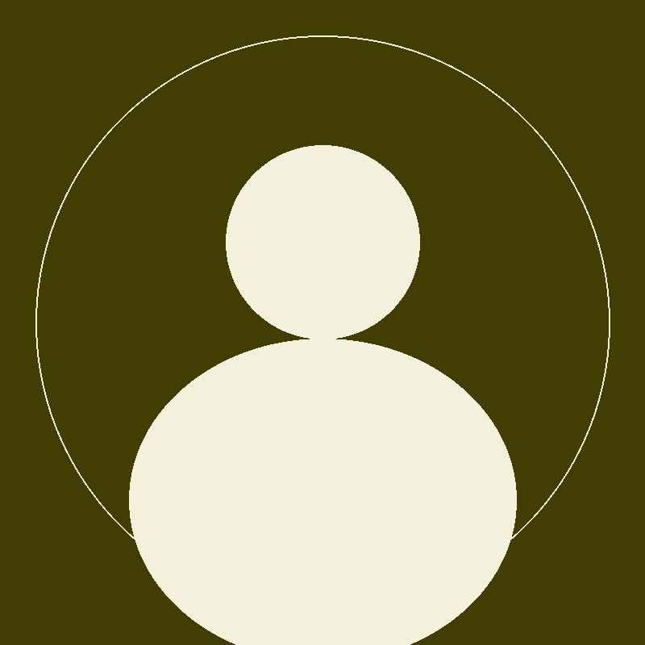
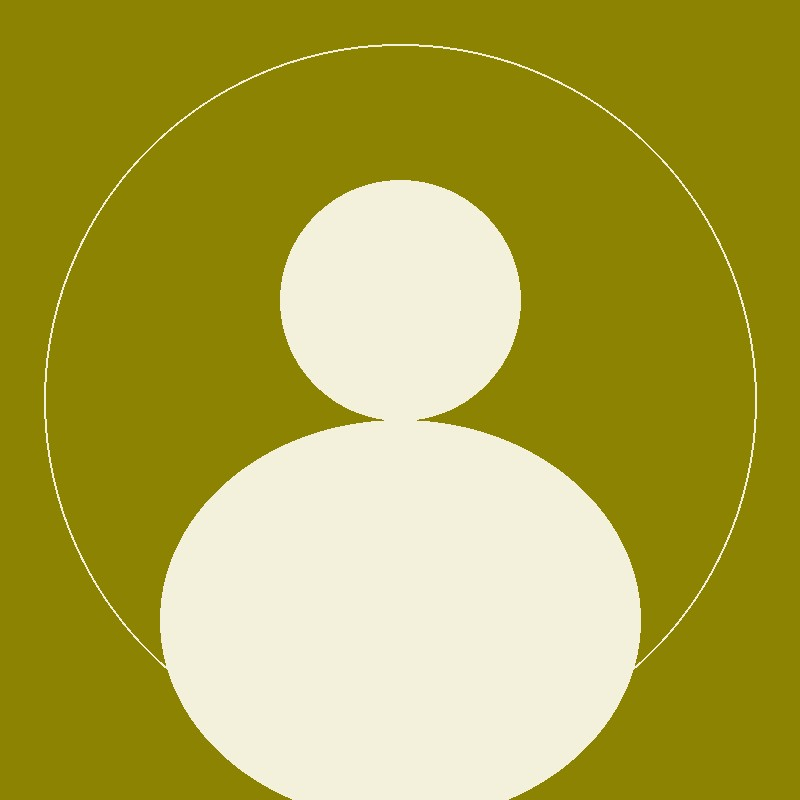
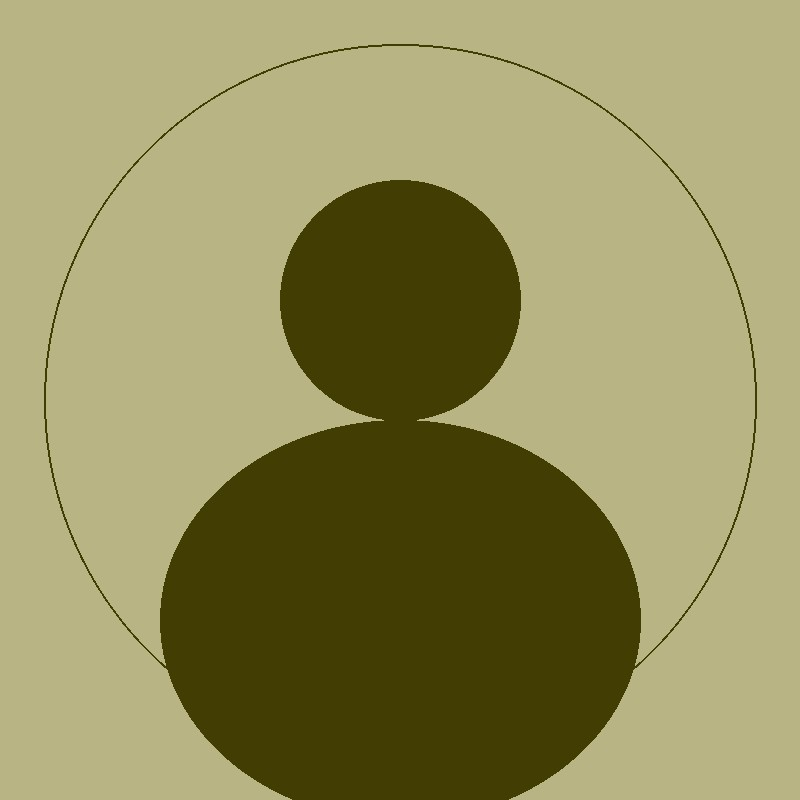
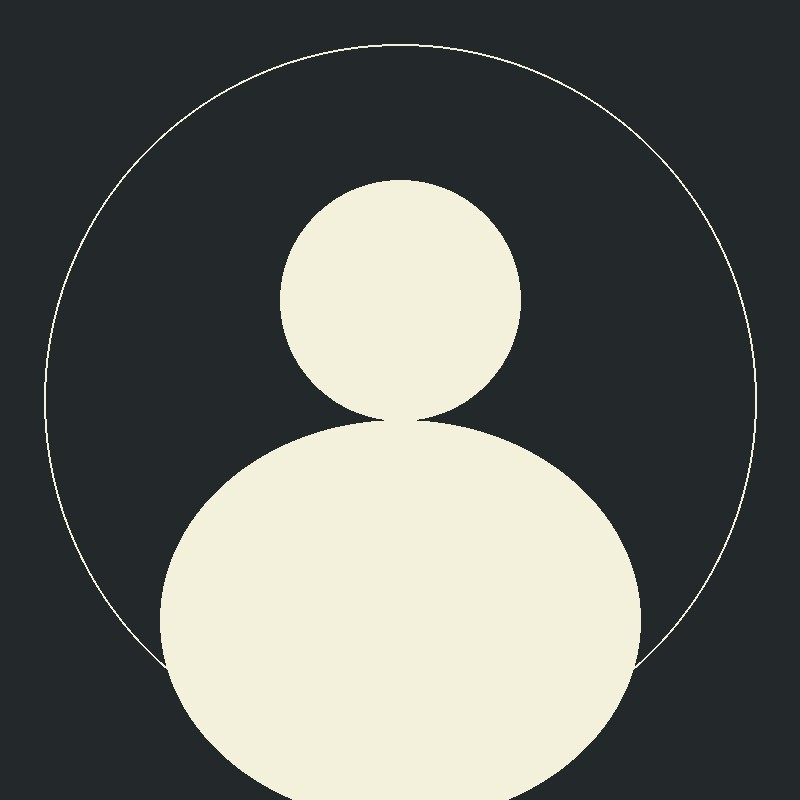

Кузбасс · культурное наследие
Народы России
История, традиции, кухня и игры коренных народов Кузбасса — в одном проекте.
- 5народов
- 4раздела
- 1общая земля



01 · Народы
Народы Кузбасса
Пять культур, которые складывались веками рядом друг с другом. Выберите народ, чтобы пройти по его истории, традициям и повседневности.
-
Горная Шория Шорцы
Коренной малочисленный народ Горной Шории, хранитель традиций таёжной культуры.
История народа -
Беково Телеуты
Коренной малочисленный народ Кузбасса с традициями скотоводства и кочевой культуры.
История народа -
Юрты-Константиновы Калмаки
Малочисленная группа, проживающая в Юргинском районе Кемеровской области.
История народа -

КузбассСибирские татары
Тюркский народ, проживающий в Кузбассе и сохраняющий свой язык и обычаи.
История народа -

КузбассРусские
Самый многочисленный народ региона, чьи традиции во многом определили облик Кузбасса.
История народа
Фотографии: Шорский улус Кезек, телеутские костюмы, калмакский лучник, сибирские татары, русский народный костюм. Материалы Wikimedia Commons, лицензии CC BY / CC BY-SA и общественное достояние.
03 · Команда
Над проектом работали
Сайт собрали участники летнего лагеря: исследовали материал, писали тексты, рисовали иллюстрации и программировали игры.
-

Нургазин Иван Вячеславович
Педагог, руководитель проекта
-

Имя Фамилия
Разработчик
-

Имя Фамилия
Разработчик
-

Имя Фамилия
Разработчик